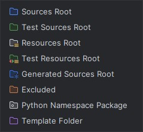

IntelliJ IDEA — Configuration du Contexte Projet¶
IntelliJ IDEA Intermédiaire
Présentation¶
IntelliJ IDEA offre un contexte extrêmement riche pour Copilot grâce à son analyse sémantique profonde du code (PSI — Program Structure Interface). Ce guide vous montre comment optimiser ce contexte.
Ce qu'IntelliJ fournit automatiquement à Copilot¶
IntelliJ IDEA analyse en profondeur votre code et fournit à Copilot :
Contexte IntelliJ pour Copilot
├── Analyse syntaxique et sémantique complète (PSI)
│ ├── Types de toutes les variables
│ ├── Signatures de toutes les méthodes
│ ├── Hiérarchie d'héritage des classes
│ └── Résolution de tous les imports
├── Indexation du projet
│ ├── Tous les symboles du projet (classes, méthodes, variables)
│ ├── Dépendances externes (Maven/Gradle/pip)
│ └── Ressources (application.yml, messages.properties)
├── Fichier actuel + contexte immédiat
└── Onglets ouverts (mêmes règles que VS Code)
C'est cette analyse profonde qui rend IntelliJ particulièrement fort pour Java/Kotlin — Copilot "comprend" votre code mieux que sur un éditeur de texte.
Structure de projet recommandée pour IntelliJ¶
Projet Maven Java¶
mon-projet-java/
├── .idea/ ← Configuration IntelliJ (ne pas modifier manuellement)
│ ├── modules.xml
│ └── workspace.xml
├── src/
│ ├── main/
│ │ ├── java/
│ │ │ └── com/monentreprise/monprojet/
│ │ │ ├── controller/ ← Couche présentation (REST)
│ │ │ ├── service/ ← Logique métier
│ │ │ ├── repository/ ← Accès données (Spring Data)
│ │ │ ├── model/ ← Entités JPA / DTOs
│ │ │ ├── config/ ← Configuration Spring
│ │ │ └── exception/ ← Exceptions custom
│ │ └── resources/
│ │ ├── application.yml ← Copilot lit cette config
│ │ └── application-dev.yml
│ └── test/
│ ├── java/
│ │ └── com/monentreprise/monprojet/
│ └── resources/
│ └── application-test.yml
├── pom.xml ← Copilot lit les dépendances Maven
└── README.md ← Important pour le contexte
Projet Gradle (Kotlin)¶
mon-projet-kotlin/
├── src/
│ ├── main/
│ │ ├── kotlin/
│ │ │ └── com/monentreprise/
│ │ │ ├── api/ ← Controllers Ktor/Spring
│ │ │ ├── domain/ ← Logique métier
│ │ │ ├── data/ ← Repositories
│ │ │ └── model/ ← Data classes
│ │ └── resources/
│ └── test/
│ └── kotlin/
├── build.gradle.kts ← Copilot lit les dépendances Gradle
├── settings.gradle.kts
└── README.md
Marquage des dossiers source/test/ressources¶
IntelliJ utilise des marquages de dossiers pour comprendre la structure du projet. Ces marquages influencent le contexte fourni à Copilot.
Comment marquer les dossiers¶
- Clic droit sur le dossier dans l'arborescence du projet
- Mark Directory as →
- Sources Root (bleu) — Code source principal
- Test Sources Root (vert) — Code de tests
- Resources Root (gris) — Ressources (XML, YAML, properties)
- Test Resources Root (gris clair) — Ressources de tests
- Excluded (rouge) — Exclu de l'indexation

Menu contextuel "Mark Directory as" — clic droit sur un dossier dans la vue ProjectImpact sur Copilot
Les dossiers marqués comme Excluded ne sont pas indexés par IntelliJ — Copilot ne les voit donc pas. Utilisez cela pour exclure du contexte les dossiers de données volumineuses ou sensibles.
Configuration des modules (projets multi-modules)¶
Pour les projets Maven/Gradle multi-modules, IntelliJ crée automatiquement un module par sous-projet :
entreprise-monorepo/
├── api-gateway/ ← Module 1
│ └── pom.xml
├── user-service/ ← Module 2
│ └── pom.xml
├── product-service/ ← Module 3
│ └── pom.xml
├── shared-lib/ ← Module partagé
│ └── pom.xml
└── pom.xml ← Parent POM
Avantage : En ouvrant le projet root dans IntelliJ, Copilot a accès aux types et interfaces de tous les modules simultanément — particulièrement utile pour les projets microservices.
Fichiers importants pour le contexte Copilot dans IntelliJ¶
pom.xml / build.gradle¶
Ces fichiers communiquent à Copilot vos dépendances — il sait donc que vous utilisez Spring Boot, Hibernate, Lombok, etc. :
<!-- pom.xml — Copilot comprend votre stack depuis ces dépendances -->
<dependencies>
<dependency>
<groupId>org.springframework.boot</groupId>
<artifactId>spring-boot-starter-web</artifactId>
</dependency>
<dependency>
<groupId>org.projectlombok</groupId>
<artifactId>lombok</artifactId>
</dependency>
<!-- Copilot suggérera @Slf4j, @Builder, @Data... -->
</dependencies>
application.yml / application.properties¶
# application.yml — Copilot comprend votre config Spring
spring:
datasource:
url: ${DATABASE_URL} # Copilot ne verra pas la vraie URL
jpa:
hibernate:
ddl-auto: validate
show-sql: false
server:
port: 8080
Javadoc et commentaires¶
Les commentaires Javadoc améliorer significativement la qualité des suggestions :
/**
* Service de gestion des commandes clients.
*
* <p>Ce service orchestre le cycle de vie complet d'une commande :
* création, validation, paiement, expédition et annulation.</p>
*
* <p>Utilise {@link PaymentService} pour le traitement des paiements
* et {@link NotificationService} pour les emails clients.</p>
*
* @author équipe-backend
* @since 2.0.0
*/
@Service
@RequiredArgsConstructor
public class OrderService {
Exclusions dans IntelliJ¶
Via .gitignore¶
IntelliJ respecte votre .gitignore pour l'indexation. Les fichiers ignorés par Git sont généralement aussi ignorés par l'indexation IntelliJ (donc par Copilot).
# .gitignore — Ces fichiers seront exclus du contexte Copilot
target/ ← Build Maven (exclu automatiquement)
build/ ← Build Gradle
.env ← Variables d'environnement
*.log ← Fichiers de log
data/ ← Données volumineuses
Via le marquage "Excluded"¶
Pour des dossiers qui doivent rester dans Git mais être exclus du contexte Copilot :
- Clic droit sur le dossier → Mark Directory as → Excluded
- Les dossiers exclus apparaissent en orange dans l'arborescence
Via les paramètres d'indexation¶
File → Settings → Project Structure → Modules → Excluded Files pour exclure des patterns de fichiers spécifiques.
Note sur les fichiers .github/ dans IntelliJ¶
Limites d'IntelliJ pour la personnalisation Copilot
IntelliJ ne supporte pas nativement les mécanismes de personnalisation VS Code :
| Mécanisme | VS Code | IntelliJ |
|---|---|---|
.instructions.md |
✅ | ✅ |
.prompt.md |
✅ | ✅ |
.agent.md |
✅ | ✅ |
SKILL.md |
✅ | ✅ (Read only) |
| Hooks Copilot | ✅ | ❌ |
.copilotignore |
✅ | A vérifier (utiliser Excluded) |
Si vous travaillez principalement sur IntelliJ et souhaitez utiliser ces fonctionnalités, vous devez ouvrir le projet dans VS Code ponctuellement pour les tâches concernées.
Indexation et performance¶
Copilot sur IntelliJ profite de l'index que l'IDE maintient. Pour que cet index soit à jour :
Forcer une re-indexation¶
- File → Invalidate Caches → cocher "Clear file system cache and Local History" → Invalidate and Restart
Surveiller l'état de l'indexation¶
- La barre de progression en bas d'IntelliJ indique l'état de l'indexation
- Copilot donne de meilleures suggestions après la fin de l'indexation complète
Optimiser l'indexation pour de grands projets¶
Settings → Build, Execution, Deployment → Compiler
→ "Build process heap size (Mbytes)" : augmentez à 2048 ou plus
Bonnes pratiques spécifiques à IntelliJ¶
1. Utiliser les features IntelliJ pour aider Copilot¶
- Générer les getters/setters via IntelliJ (Alt+Ins) plutôt que par Copilot — plus fiable
- Implémenter les interfaces via IntelliJ (Ctrl+I) pour que Copilot voie les implémentations existantes
- Utiliser les quick fixes (Alt+Enter) pour les imports — IntelliJ est plus précis que Copilot pour les imports
2. Structurer les packages de manière expressive¶
// ✅ Package expressif — Copilot comprend le domaine
com.monentreprise.commande.service
com.monentreprise.commande.repository
com.monentreprise.paiement.service
// ❌ Package générique — Copilot a moins de contexte
com.monentreprise.stuff
com.monentreprise.utils.helpers
3. Utiliser les annotations Spring expressives¶
// ✅ Annotations explicites — Copilot comprend le rôle
@RestController
@RequestMapping("/api/v1/users")
public class UserController { ... }
@Service
@Transactional
public class UserService { ... }
@Repository
public interface UserRepository extends JpaRepository<User, UUID> { ... }
Prochaine étape¶
Comparaison — Contexte & Personnalisation entre Éditeurs : tableau comparatif complet des fonctionnalités Copilot entre IntelliJ IDEA et VS Code, avec recommandations par contexte et écosystème.
Concepts clés couverts :
- Différences d'analyse sémantique — PSI vs Language Server Protocol (LSP)
- Avantages de chaque IDE — IntelliJ pour JVM, VS Code pour TypeScript/Python
- Contexte par écosystème — Frontend, Backend Java, Backend Node.js, Polyglot
- Stratégies combinées — Comment utiliser les deux IDEs en complémentarité